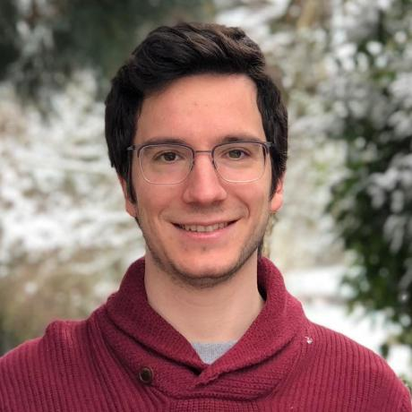

I am a quantum-computing researcher focused on turning today's noisy
superconducting processors into reliable scientific instruments.
Research focus areas
- Quantum algorithms to tackle quantum simulations of many-body physics, quantum sensing, and quantum information processing.
- Error suppression & mitigation — from pulse
design to context-aware compiling — that lift gate fidelity in situ.
- Benchmarking rules and scalable mirror-circuit tests to make
cross-platform results comparable.
- Non-stationary cavity QED studies, including the
dynamical Lamb effect, investigating the role of non-adiabatic effects in quantum information processing.
I currently work with superconducting qubit devices and collaborate
broadly across academia and industry to push quantum advantage closer.